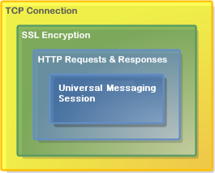

Comet Communication Protocols
Universal Messaging supports Comet and WebSocket over two Comet Communication Protocols.
Streaming Comet, Long Polling or WebSocket
The Universal Messaging Comet API supports several both streaming and long polling Comet or WebSocket communications. A developer can select which method to use when starting a session with the JavaScript API.
Communication Protocols
HTTPS Protocol (https)
The Universal Messaging Comet HTTPS (SSL-encrypted HTTP) Protocol is a lightweight web-based protocol, optimized for communication over web infrastructure such as client or server-side firewalls and proxy servers.
This protocol simplifies communication between Universal Messaging Clients and Realms running behind single or multiple firewall layers or on private address range (NAT) networks. There is no requirement for an additional web server, proxy, or port redirector on your firewall to take advantage of the flexibility that the Universal Messaging HTTPS Protocol offers.
The protocol is fully SSL-encrypted and also supports the use of HTTP proxy servers, with or without proxy user authentication.
 HTTPS Protocol (https)
HTTP Protocol (http)
The Universal Messaging Comet HTTP Protocol is a lightweight web-based protocol, supporting communication through proxies and firewalls at the client or server end of the network.
This protocol provides the same functionality as the Universal Messaging Comet HTTPS protocol, but without SSL encrypted communications.
Recommendation
We generally recommend the HTTPS Protocol (https) for Universal Messaging Comet clients, as this is both securely encrypted and easy to use.
RNAMEs
The RNAME used by a Universal Messaging Comet Client to connect to a Universal Messaging Realm server will automatically default to the same protocol/host/port as the web server from which an application is served, unless overridden by the developer when starting a session.
Note that a Universal Messaging realm can have multiple network interfaces, each supporting any combination of Native and Comet communication protocols.